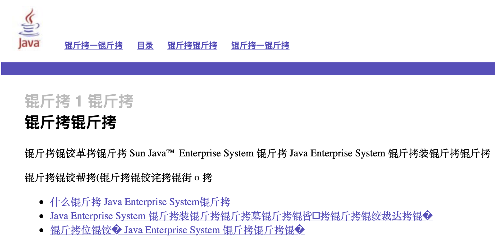
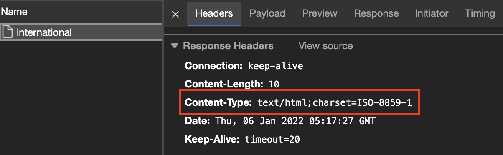
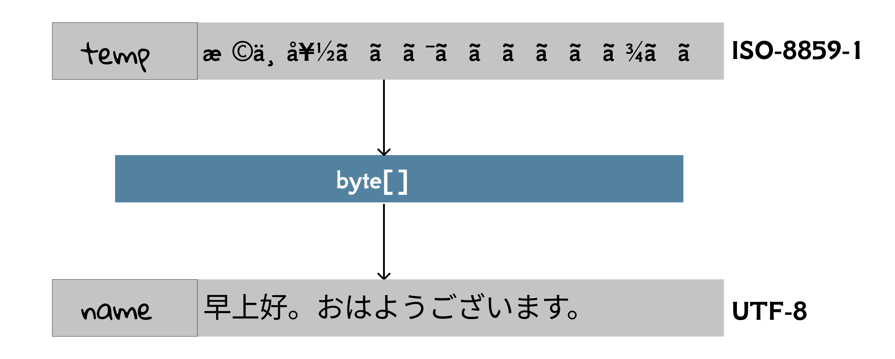

3.3 More About Request
In this section, we continue studying more about request using a question-oriented method. To be specific,
- how to handle multi values with one name in a request?
- how to handle non-latin characters?
- what else can I get from a request object?
In-depth parameter(2)
No matter what the HTTP method is, the query parameters in a request are started with a question mask ?, and separated by the ampersand &. So, how to handle multi values with one name in a request? It is mainly found in checkbox. Checkboxes let a user select zero or more options of a limited number of choices; while select only allows a user select zero or one option.
<input type="checkbox" id="read1" name="read" value="PC">
<label for="read1">PC</label><br>
<input type="checkbox" id="read2" name="read" value="Kindle">
<label for="read2">Kindle</label><br>
<input type="checkbox" id="read3" name="read" value="paper">
<label for="read3">paper</label><br>
<input type="checkbox" id="read4" name="read" value="phone">
<label for="read4">Phone</label><br>
Note that name with "read" is repeated for 4 times. If both PC and Kindle are selected, then the query string would contain read=PC&read=Kindle. So how can we get those values in a servlet? Instead using getParameter(), we should use getParameterValues():
String[] getParameterValues(String name) Returns an array of String objects containing all of the values the given request parameter has, or null if the parameter does not exist.
String[] reads = request.getParameterValues("read");
In-depth parameter(3)
Till now, we only use English in the web applications. But in the real world, we would like a international website which can be accessed by people using different languages all over the world[1]. It is not trivial problem, because garbled characters are very common in real systems if i18n is not well considered. For example, there are many legacy pages from Oracle which are full of garbled characters, such as "锟斤拷". We bet no one can interpret the meaning of 锟斤拷:

In this subsection, let's investigate this problem.
First of all, we design a small test to reproduce this problem in utf8.html of ch3/request:
<form action="international" method="post">
<label for="name">Name: </label>
<input type="text" name="name" id="name">
<button type="submit">Login in</button>
</form>
And in InternationalServlet.java whose URL name is /international we try to output the name:
response.setContentType("text/html");
PrintWriter out = response.getWriter();
String name = request.getParameter("name");
out.println(name);
If we input Bob in the input box, the output is Box, as we expected; but if we input 小明 in the input box, the output is å°æ˜Ž. WTF?
[!TIP] TL;DR There are different character set encodings, and it may produce garbled characters when converting one to another. Modern applications should use UTF-8 if you don't have special reasons to use alternatives.
To understand this, you need know the background knowledge about how a string is represented. Essentially, String, as well as other objects, are a sequences of bytes[2]. Given a sequence of bytes, how to interpret it depends on the character encoding. To be precise, character encoding is the process of assigning numbers to graphical characters, especially the written characters of human language, allowing them to be stored, transmitted, and transformed using digital computers. And the character set used in encoding/decoding is usually abbreviated as charset.
As an analogy, let's take an double entendre in English as an example: "What's the longest sentence in the world?" "Life sentence." Here, sentence can be 1) a set of words that is complete in itself; or 2) the punishment assigned to a defendant found guilty by a court. Anyway, the same data can convey different meanings in different interpretations.
There are a larger number of character encodings. For example:
- ASCII: for English [3]
- UTF-8: for Unicode
- ISO 8859: for Europe
- GB 2312: for Chinese
- ...
UTF-8 is by far the most common encoding for the World Wide Web, accounting for 98% of all web pages, and up to 100.0% for some languages, as of 2021[4]. So, please use UTF-8 encoding in your applications if possible. ISO 8859-1 is in the family of ISO-8859, which is used to encode western Europe languages, and it is the one what Tomcat is using. The following is what happens behind the scene.
- The parameters is encoded in UTF-8 by the web browser, and sent to the server.
- Tomcat decodes the parameters in ISO 8859-1. Note that IOS 8859-1 can be only used to store western Europe characters.
- Tomcat sends this value as response in ISO 8859-1 encoding.
We can notice the response encoding in Network tab:

Therefore, you cannot pass the parameters in Chinese (e.g., 你好) or Japanese (e.g., こんにちわ).
How to solve this problem? One solution is to specify the UTF-8 charset for both request and response. Note that the case is insensitive.
request.setCharacterEncoding("utf-8");
response.setContentType("text/html;charset=utf-8");
Alternatively, you can specify the response's encoding separately:
request.setCharacterEncoding("utf-8");
response.setCharacterEncoding("utf-8");
response.setContentType("text/html");
The code above works for POST. But as for GET, it does not make sense to set charset for request,
void setCharacterEncoding(String env) Overrides the name of the character encoding used in the body of this request.
Recall the the parameters of POST are wrapped in the request body, while the parameters of GET is appended in the URL directly. Therefore, when it comes to GET, specifying the encoding for the response is enough:
response.setContentType("text/html;charset=utf-8");
By the way, as for POST, another solution is to encode nd decode manually without specifying the charset of request:
String temp = request.getParameter("name");
String name = new String(tmp.getBytes(StandardCharsets.ISO_8859_1), StandardCharsets.UTF_8);

In utf8-2.html, we send a parameter in Chinese to a servlet via POST, and then the servlet forwards this request to a JSP, like we did in the mini MVC project. To encode/decode correctly, the code is similar. Note that we don't need to set charset for response now, because the encoding of result.jsp has been specified to the UTF-8:
<%@ page contentType="text/html;charset=UTF-8" language="java" %>
Beyond parameters
The ServletRequest and HttpServletRequest interfaces have a ton of methods you can call, but you don’t need to memorize them all. On your own, you really should look at the full API for javax.servlet.ServletRequest and javax.servlet.http.HttpServletRequest, but here we’ll look at only the methods you’re most likely to use in your work.
Don't worry if you are not clear about how or why you'd use each of these; we'll see more details on some of them (especially cookies and session) later in the book.
The client's platform and browser info
As we can see in Fig 1.15 and 3.4, a large number of information, in the form of <name>: <value>, contained in the request header, and then we can use getHeader() to extract targeted one:
String getHeader(String name) Returns the value of the specified request header as a String.
A user agent is a computer program representing a person, for example, a browser in a Web context. The User-Agent request header is a characteristic string that lets servers and network peers identify the application, operating system, vendor, and/or version of the requesting user agent[5]. The user agent string of my web browser indicates I am using MacOS and Edge:
User-Agent: Mozilla/5.0 (Macintosh; Intel Mac OS X 10_15_7) AppleWebKit/537.36 (KHTML, like Gecko) Chrome/96.0.4664.110 Safari/537.36 Edg/96.0.1054.62
And it can be obtained in a servlet:
String agent = request.getHeader("User-Agent");
The cookies associated with this request
Cookie[] cookies = request.getCookies();
The session associated with this request
HttpSession session = request.getSession();
The HTTP method of this request
String method = request.getMethod();
[1] It is often called i18n, short for internationalization and localization. Internationalization is the process of designing a software application so that it can be adapted to various languages and regions without engineering changes. Localization is the process of adapting internationalized software for a specific region or language by translating text and adding locale-specific components.
[2] A byte is a unit of measurement of the size of information on a computer or other electronic device. A single byte is usually eight bits.
[3] Here we mean US-ASCII.
[4] https://en.wikipedia.org/wiki/UTF-8
[5] https://developer.mozilla.org/en-US/docs/Web/HTTP/Headers/User-Agent